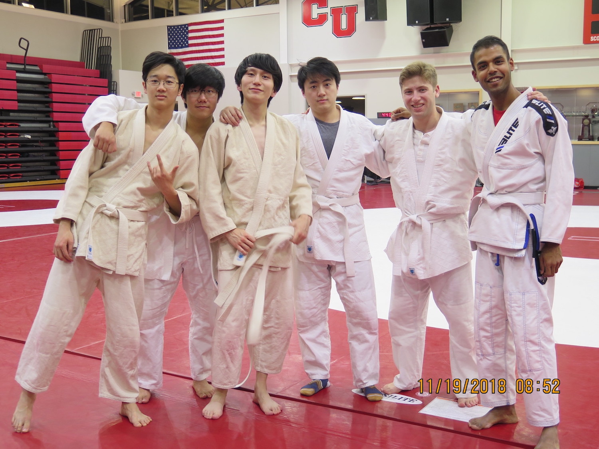
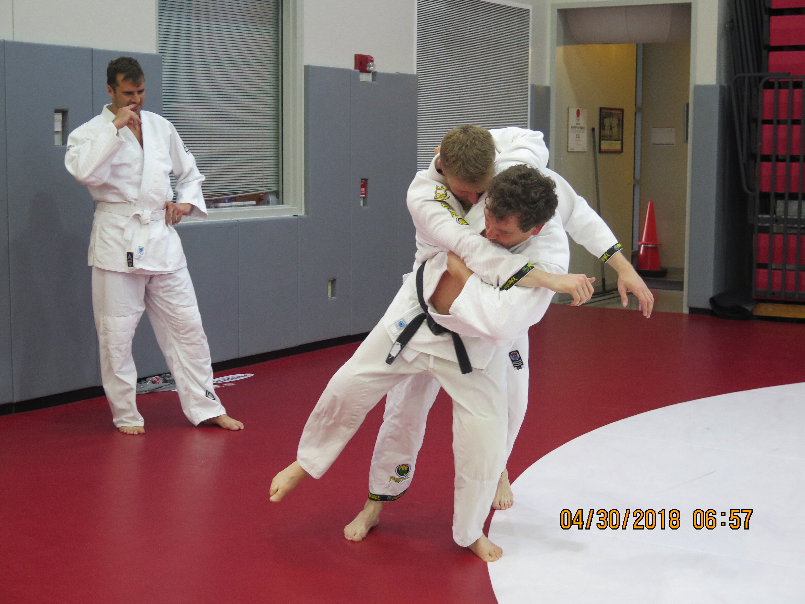
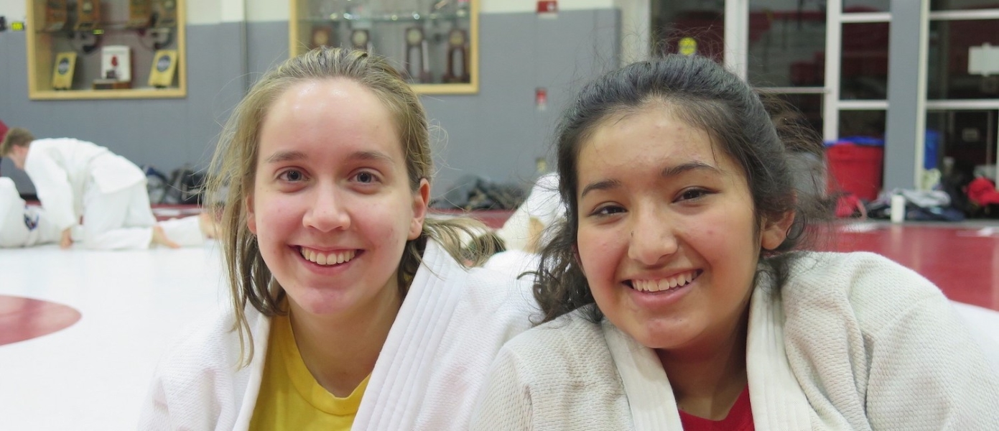

The Cornell Judo Club
Cornell Judo Club
We are one of the oldest judo clubs in America. We welcome people to join our club and learn judo with us. Members of the public and Cornell community are welcome. We do allow children to participate, but because we do not have a separate class, we ask that parents come along to supervise and/or participate along with their children.